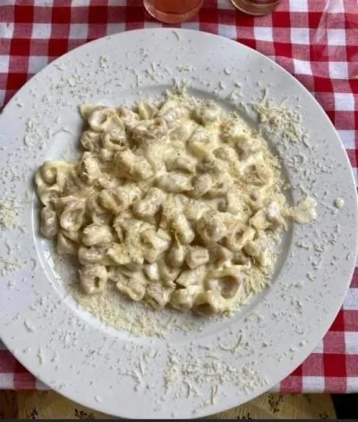

TRATTORIA SANTA RITA · HORSENS
Vores menukort.
Smag på vores italienske køkken. Vælg en kategori eller søg efter en ret.
Udforsk menuen

TRATTORIA SANTA RITA · HORSENS
Smag på vores italienske køkken. Vælg en kategori eller søg efter en ret.
Udforsk menuen